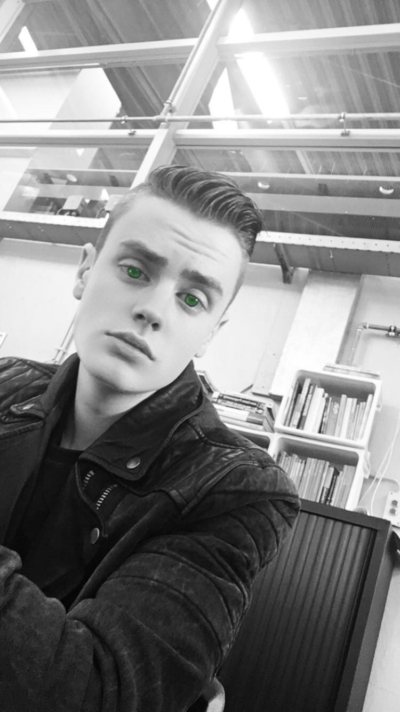

Over mij
Op deze pagina staat informatie over mij die je kunt lezen.
wie ben ik?
ik ben wilco, ik ben 17 jaar en ben jarig op 01-03-1999.
ik ben geboren in gorinchem en ik heb in arkel gewoond tot ik 15 was. nu woon ik in Nieuwendijk bij mij vader en in Werkendam bij mijn moeder.
school en werk
ik zit op het davinci college in gorinchem en doe daar de opleiding ict medewerker. na deze opleiding hoop ik door te stromen naar applicatie ontwikkelaar, want dat is iets wat ik later wil gaan doen. ik werk bij de albertheijn en ben daar vakkenvuller. ik werk daar 3 dagen in de week voor 3 uur per dag.
Dromen en toekomst beeld
mijn droom is om mijn eigen game te publishen en een game developer te worden en dan in engeland of zwede te werken als game developer. ik zie mezelf over paar jaar werken in de ICT en ergens op mezelf wonen.
sport en hobby
ik houd van films en series kijken op netflix,plex en youtube en ik luister vaak naar muziek . ik doe niet aan sport op het moment en ik denk ook niet dat dat gaat gebeuren maar heb het wel gedaan.
© All rights reserved. | Photos by Fotograph Wilco Hansen
Design by Wilco Hansen.